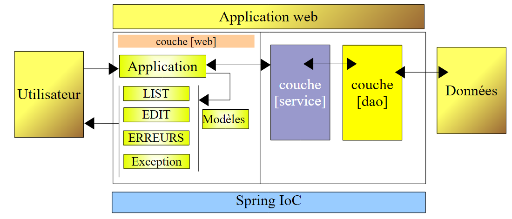
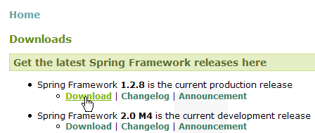

15. Spring IoC
15.1. Introduction
We gaan de configuratie- en integratiemogelijkheden van het Spring-framework (http://www.springframework.org) verkennen en het begrip IoC (Inversion of Control), ook wel afhankelijkheidsinjectie (Dependency Injection) genoemd, definiëren en toepassen
Laten we eens kijken naar de 3-tier-applicatie die we zojuist hebben gebouwd:
 |
Om aan de verzoeken van de gebruiker te voldoen, moet de controller [Application] contact opnemen met de laag [service]. In ons voorbeeld was dit een instantie van het type [DaoImpl]. De controller [Application] heeft in zijn methode [init] (paragraaf 14.8.3) een verwijzing naar de laag [service] verkregen:
- regel 6: de laag [dao] is geïnstantieerd door het expliciet aanmaken van een instantie [DaoImpl]
- regel 9: de laag [service] is geïnstantieerd door het expliciet aanmaken van een instantie [ServiceImpl]
Ter herinnering: de klassen [DaoImpl] en [ServiceImpl] implementeren respectievelijk de interfaces [IDao] en [IService]. In toekomstige versies zal de interface [IDao] worden geïmplementeerd door een klasse die een lijst met personen beheert die in de database is opgeslagen. Laten we deze klasse voor het voorbeeld [DaoBD] noemen. Het vervangen van de implementatie [DaoImpl] van de laag [dao) door de implementatie [DaoBD] vereist een hercompilatie van de laag [web]. De regel 6 hierboven, die de laag [dao] instantiëert met een type [DaoImpl], moet deze nu namelijk instantiëren met een type [DaoBD]. Onze laag [web] is dus afhankelijk van de laag [dao]. Regel 9 hierboven laat zien dat deze ook afhankelijk is van de laag [service].
Met Spring IoC kunnen we een 3-tier-applicatie bouwen waarin de lagen onafhankelijk van elkaar zijn, c.a.d, zodat het wijzigen van de ene laag niet betekent dat de andere lagen ook moeten worden aangepast. Dit biedt veel flexibiliteit bij de verdere ontwikkeling van de applicatie.
De vorige architectuur zal als volgt evolueren:
 |
Met [Spring IoC] zal de controller [Application] de benodigde referentie op de laag [service] op de volgende manier verkrijgen:
- in zijn methode [init] zal hij de laag [Spring IoC] vragen om hem een referentie te geven op de laag [service]
- [Spring IoC] zal vervolgens een configuratiebestand XML gebruiken dat aangeeft welke klasse moet worden geïnstantieerd en hoe deze moet worden geïnitialiseerd.
- [Spring IoC] geeft de referentie van de aangemaakte laag [service] terug aan de controller [Application].
Het voordeel van deze oplossing is dat de namen van de klassen die de verschillende lagen instantiëren voortaan niet meer hard gecodeerd zijn in de methode [init] van de controller, maar gewoon in een configuratiebestand staan. Het wijzigen van de implementatie van een laag leidt tot een wijziging in dit configuratiebestand, maar niet in de controller.
Laten we nu de mogelijkheden van [Spring IoC] aan de hand van voorbeelden bekijken.
15.2. Spring IoC in de praktijk
15.2.1. Spring
[Spring IoC] maakt deel uit van een groter project dat beschikbaar is via de url [http://www.springframework.org/] (mei 2006):
 |  |
 |
- [1]: Spring maakt gebruik van diverse technologieën van derden, die hier dépendances worden genoemd. U moet de versie met dépendances downloaden om te voorkomen dat u vervolgens de bibliotheken van de tools van derden moet downloaden.
- [2]: de mapstructuur van het gedownloade zip-bestand
- [3]: de distributie [Spring], c.a.d. De .jar-archieven van het Spring-project zelf, zonder de afhankelijkheden. De [IoC]-component van Spring wordt geleverd door de archieven [spring-core.jar, spring-beans.jar].
- [4,5]: de archieven van tools van derden
15.2.2. Eclipse-projecten van de voorbeelden
We gaan drie voorbeelden bouwen die het gebruik van Spring IoC illustreren. Deze zullen allemaal in het volgende Eclipse-project staan:

Het project [springioc-exemples] is zo geconfigureerd dat de bronbestanden en de gecompileerde klassen zich in de hoofdmap van het project bevinden:
 |
- [1]: de mappenstructuur van het project [Eclipse]
- [2]: de Spring-configuratiebestanden bevinden zich in de hoofdmap van het project, dus in de map Classpath van de applicatie
- [3]: de klassen van voorbeeld 1
- [4]: de klassen van voorbeeld 2
- [5]: de klassen van voorbeeld 3
- [6]: de bibliotheken van het project [spring-core.jar, spring-beans.jar] zijn te vinden in de map [dist] van de Spring-distributie en [commons-logging.jar] in de map [lib/jakarta-commons]. Deze drie archieven zijn opgenomen in het Classpath-bestand van de applicatie.
15.2.3. Voorbeeld 1
De elementen uit voorbeeld 1 zijn in het pakket [springioc01] van het project geplaatst:

De klasse [Personne] is als volgt:
De klasse bevat:
- regels 6-7: twee privévelden ‘naam’ en ‘leeftijd’
- regels 23-38: de methoden voor het lezen (get) en schrijven (set) van deze twee velden
- regels 10-12: een methode toString om de waarde van het object [Personne] op te halen in de vorm van een tekenreeks
- regels 15-21: een methode `init` die door Spring wordt aangeroepen bij het aanmaken van het object, en een methode `close` die wordt aangeroepen bij het vernietigen van het object
Om objecten van het type [Personne] met behulp van Spring te instantiëren, gebruiken we het volgende bestand [spring-config-01.xml]:
<?xml version="1.0" encoding="UTF-8"?>
<!DOCTYPE beans PUBLIC "-//SPRING//DTD BEAN//EN" "http://www.springframework.org/dtd/spring-beans.dtd">
<beans>
<bean id="personne1" class="istia.st.springioc01.Personne" init-method="init" destroy-method="close">
<property name="nom" value="Simon" />
<property name="age" value="40" />
</bean>
<bean id="personne2" class="istia.st.springioc01.Personne" init-method="init" destroy-method="close">
<property name="nom" value="Brigitte" />
<property name="age" value="20" />
</bean>
</beans>
- regels 3, 12: de tag <beans> is de hoofdtag van Spring-configuratiebestanden. Binnen deze tag wordt de tag <bean> gebruikt om de verschillende aan te maken objecten te definiëren.
- regels 4-7: definitie van een bean
- regel 4: de bean heet [personne1] (attribuut id) en is een instantie van de klasse [istia.st.springioc01.Personne] (attribuut class). De methode [init] van de instantie wordt aangeroepen zodra deze is aangemaakt (attribuut init-method) en de methode [close] van de instantie wordt aangeroepen voordat deze wordt vernietigd (attribuut destroy-method).
- regel 5: hiermee wordt de waarde bepaald die moet worden toegekend aan de eigenschap [nom] (attribuut name) van de aangemaakte instantie [Personne]. Om deze initialisatie uit te voeren, gebruikt Spring de methode [setNom]. Deze methode moet dus bestaan. Dat is hier het geval.
- regel 6: hetzelfde geldt voor de eigenschap [age].
- regels 8-11: soortgelijke definitie van een bean met de naam [personne2]
De testklasse [Main] ziet er als volgt uit:
Opmerkingen:
- regel 10: om de beans op te halen die zijn gedefinieerd in het bestand [spring-config-01.xml], gebruiken we een object van het type [XmlBeanFactory] waarmee de beans die zijn gedefinieerd in een bestand XML kunnen worden geïnstantieerd. Het bestand [spring-config-01.xml] wordt geplaatst in het [ClassPath] van de applicatie, c.a.d, in een van de mappen die door de Java-virtuele machine worden doorzocht wanneer deze op zoek is naar een klasse waarnaar door de applicatie wordt verwezen. Het object [ClassPathResource] wordt gebruikt om een bron te zoeken in het [ClassPath] van een applicatie, in dit geval het bestand [spring-config-01.xml]. Met het verkregen object [bf] (Bean Factory) kan de verwijzing naar een bean met de naam "XX" worden verkregen via de instructie bf.getBean("XX").
- regel 12: er wordt een verwijzing opgevraagd naar de bean met de naam [personne1] in het bestand [spring-config-01.xml].
- regel 13: de waarde van het bijbehorende object [Personne] wordt weergegeven.
- regels 15-16: hetzelfde gebeurt voor de bean met de naam [personne2].
- regels 18-19: de bean met de naam [personne2] wordt opnieuw opgevraagd.
- regel 21: alle beans van [bf] en c.a.d worden verwijderd, evenals de beans die zijn aangemaakt op basis van het bestand [spring-config-01.xml].
Het uitvoeren van de klasse [Main] levert de volgende resultaten op:
Opmerkingen:
- regel 1 is verkregen door het uitvoeren van regel 12 van [Main]. De bewerking
heeft de aanmaak van de bean [personne1] geforceerd. Omdat in de definitie van de bean [personne1] [init-method="init"] was geschreven, werd de methode [init] van het aangemaakte object [Personne] uitgevoerd. Het bijbehorende bericht wordt weergegeven.
- regel 2: regel 13 van [Main] heeft de waarde van het aangemaakte object [Personne] weergegeven.
- regels 3-4: hetzelfde gebeurt voor de bean met de naam [personne2].
- regel 5: de bewerking van de regels 18-19 van [Main]
personne2 = (Personne) bf.getBean("personne2");
System.out.println("personne2=" + personne2.toString());
heeft niet geleid tot het aanmaken van een nieuw object van het type [Personne]. Als dat wel het geval was geweest, zou de methode [init] zijn weergegeven. Dit is het principe van de singleton. Spring maakt standaard slechts één exemplaar aan van de beans uit zijn configuratiebestand. Het is een objectreferentieservice. Als er om de referentie van een nog niet aangemaakt object wordt gevraagd, maakt Spring het aan en retourneert een referentie. Als het object al is aangemaakt, geeft Spring alleen een referentie. Aangezien [personne2] hier al was aangemaakt, retourneert Spring alleen een referentie.
- De uitvoer op de regels 6-7 werd veroorzaakt door regel 21 van [Main], die vraagt om het vernietigen van alle beans waarnaar het object [XmlBeanFactory bf] verwijst, dus de beans [personne1, personne2]. Omdat deze twee beans het attribuut [destroy-method="close"] hebben, wordt de methode [close] van beide beans uitgevoerd, wat leidt tot de weergave van de regels 6-7.
Nu we de basis van een Spring-configuratie onder de knie hebben, zullen we voortaan wat sneller door de uitleg heen gaan.
15.2.4. Voorbeeld 2
De elementen van voorbeeld 2 zijn ondergebracht in het pakket [springioc02] van het project:

Het pakket [springioc02] wordt eerst verkregen door het pakket [springioc01] te kopiëren en te plakken, waarna de klasse [Voiture] wordt toegevoegd en de klasse [Main] wordt aangepast aan het nieuwe voorbeeld.
De klasse [Voiture] is als volgt:
De klasse bevat:
- regels 5-7: drie privévelden type, merk en eigenaar. Deze velden kunnen worden geïnitialiseerd en uitgelezen via de openbare get- en set-methoden van de beans op regels 26-48. Ze kunnen ook worden geïnitialiseerd met behulp van de constructor Auto(String, String, Persoon) die is gedefinieerd op regels 13-17. De klasse beschikt ook over een constructor zonder argumenten om te voldoen aan de norm JavaBean.
- regels 20-23: een methode toString om de waarde van het object [Voiture] op te halen in de vorm van een tekenreeks
- regels 51-57: een init-methode die door Spring wordt aangeroepen direct na het aanmaken van het object, en een close-methode die wordt aangeroepen bij het vernietigen van het object
Om objecten van het type [Voiture] aan te maken, gebruiken we het volgende Spring-bestand [spring-config-02.xml]:
<?xml version="1.0" encoding="UTF-8"?>
<!DOCTYPE beans PUBLIC "-//SPRING//DTD BEAN//EN" "http://www.springframework.org/dtd/spring-beans.dtd">
<beans>
<bean id="personne1" class="istia.st.springioc02.Personne" init-method="init" destroy-method="close">
<property name="nom" value="Simon" />
<property name="age" value="40" />
</bean>
<bean id="personne2" class="istia.st.springioc02.Personne" init-method="init" destroy-method="close">
<property name="nom" value="Brigitte" />
<property name="age" value="20" />
</bean>
<bean id="voiture1" class="istia.st.springioc02.Voiture" init-method="init" destroy-method="close">
<constructor-arg index="0" value="Peugeot" />
<constructor-arg index="1" value="307" />
<constructor-arg index="2">
<ref local="personne2" />
</constructor-arg>
</bean>
</beans>
Dit bestand voegt aan de beans die in [spring-config-01.xml] zijn gedefinieerd een bean toe met de sleutel "voiture1" van het type [Voiture] (regels 12-17). Om deze bean te initialiseren, hadden we het volgende kunnen schrijven:
In plaats van deze methode te kiezen, die al in voorbeeld 1 is behandeld, hebben we hier gekozen voor de constructor Auto(String, String, Persoon) van de klasse.
- regel 12: definitie van de naam van de bean, de klasse, de methode die na het instantiëren moet worden uitgevoerd, en de methode die na het verwijderen moet worden uitgevoerd.
- regel 13: waarde van de eerste parameter van de constructor [Voiture(String, String, Personne)].
- regel 14: waarde van de tweede parameter van de constructor [Voiture(String, String, Personne)].
- regels 15-17: waarde van de derde parameter van de constructor [Voiture(String, String, Personne)]. Deze parameter is van het type [Personne]. Als waarde wordt de referentie (tag ref) van de bean [personne2] opgegeven, die in hetzelfde bestand is gedefinieerd (attribuut local).
Voor onze tests gebruiken we de volgende klasse [Main]:
De methode [main] vraagt de referentie van de bean [voiture1] op (regel 12) en geeft deze weer (regel 13). De resultaten zijn als volgt:
Opmerkingen:
- de methode [main] vraagt een referentie op naar de bean [voiture1] (regel 12). Spring begint met het aanmaken van de bean [voiture1], omdat deze bean nog niet is aangemaakt (singleton). Omdat de bean [voiture1] verwijst naar de bean [personne2], wordt deze laatste bean op zijn beurt aangemaakt. De bean [personne2] is aangemaakt. De methode [init] ervan wordt vervolgens uitgevoerd (regel 1) van de resultaten. Vervolgens wordt de bean [voiture1] geïnstantieerd. De methode [init] ervan wordt vervolgens uitgevoerd (regel 2) van de resultaten.
- regel 3 van de resultaten is afkomstig van regel 13 van [main]: de waarde van de bean [voiture1] wordt weergegeven.
- regel 15 van [main] vraagt om het vernietigen van alle bestaande beans, wat leidt tot de weergave van de regels 4 en 5 van de resultaten.
15.2.5. Voorbeeld 3
De elementen van voorbeeld 3 zijn ondergebracht in het pakket [springioc03] van het project:

Het pakket [springioc03] wordt eerst verkregen door het pakket [springioc01] te kopiëren en te plakken, waarna de klasse [GroupePersonnes] eraan wordt toegevoegd, verwijderen we de klasse [Voiture] en passen we de klasse [Main] aan het nieuwe voorbeeld aan.
De klasse [GroupePersonnes] is als volgt:
De twee privé-leden ervan zijn:
regel 8: leden: een array van personen die lid zijn van de groep
regel 9: groupesDeTravail: een woordenboek dat een persoon aan een werkgroep toewijst
Hier valt op dat de klasse [GroupePersonnes] geen constructor zonder argumenten definieert. Ter herinnering: bij het ontbreken van een constructor is er een "standaard" constructor, namelijk de constructor zonder argumenten, die niets doet.
We willen hier laten zien hoe Spring het mogelijk maakt om complexe objecten te initialiseren, zoals objecten met velden van het type array of woordenboek. Het bean-bestand [spring-config-03.xml] uit voorbeeld 3 ziet er als volgt uit:
<?xml version="1.0" encoding="UTF-8"?>
<!DOCTYPE beans PUBLIC "-//SPRING//DTD BEAN//EN" "http://www.springframework.org/dtd/spring-beans.dtd">
<beans>
<bean id="personne1" class="istia.st.springioc03.Personne" init-method="init" destroy-method="close">
<property name="nom" value="Simon" />
<property name="age" value="40" />
</bean>
<bean id="personne2" class="istia.st.springioc03.Personne" init-method="init" destroy-method="close">
<property name="nom" value="Brigitte" />
<property name="age" value="20" />
</bean>
<bean id="groupe1" class="istia.st.springioc03.GroupePersonnes" init-method="init" destroy-method="close">
<property name="membres">
<list>
<ref local="personne1" />
<ref local="personne2" />
</list>
</property>
<property name="groupesDeTravail">
<map>
<entry key="Brigitte" value="Marketing" />
<entry key="Simon" value="Ressources humaines" />
</map>
</property>
</bean>
</beans>
- regels 14-17: met de tag <list> kan een veld van het type array of een veld dat de interface List implementeert, met verschillende waarden worden geïnitialiseerd.
- regels 20-23: met de tag <map> kun je hetzelfde doen met een veld dat de interface Map implementeert.
Voor onze tests gebruiken we de volgende klasse [Main]:
- regels 12-13: we vragen Spring om een verwijzing naar de bean [groupe1] en geven de waarde daarvan weer.
De verkregen resultaten zijn als volgt:
Opmerkingen:
- in regel 12 van [Main] wordt een verwijzing naar de bean [groupe1] opgevraagd. Spring begint met het aanmaken van deze bean. Omdat de bean [groupe1] verwijst naar de beans [personne1] en [personne2], worden deze twee beans aangemaakt (regels 1 en 2 van de resultaten). Vervolgens wordt de bean [groupe1] geïnstantieerd en wordt de methode [init] ervan uitgevoerd (regel 3 van de resultaten).
- regel 13 van [Main] zorgt ervoor dat regel 4 van de resultaten wordt weergegeven.
- regel 15 van [Main] zorgt ervoor dat de regels 5-7 van de resultaten worden weergegeven.
15.3. Configuratie van een n-tier-applicatie met Spring
Laten we eens kijken naar een 3-tier-applicatie met de volgende structuur:
gebruiker
Gegevens
Bedrijfslaag [metier]
Gegevenslaag [dao]
Gebruikersinterface-laag [ui]
We willen hier laten zien waarom Spring geschikt is om een dergelijke architectuur te bouwen.
- De drie lagen worden onafhankelijk van elkaar gemaakt door het gebruik van Java-interfaces
- De integratie van de drie lagen wordt door Spring verzorgd
De structuur van de applicatie in Eclipse zou er als volgt uit kunnen zien:
 |
- [1]: de laag [dao]:
- [IDao]: de interface van de laag
- [Dao1, Dao2]: twee implementaties van deze interface
- [2]: de laag [metier]:
- [IMetier]: de interface van de laag
- [Metier1, Metier2]: twee implementaties van deze interface
- [3]: de laag [ui]:
- [IUi]: de interface van de laag
- [Ui1, Ui2]: twee implementaties van deze interface
- [4]: de Spring-configuratiebestanden van de applicatie. We zullen de applicatie op twee manieren configureren.
- [5]: de bibliotheken die nodig zijn voor de toepassing. Dit zijn dezelfde bibliotheken die in de voorgaande voorbeelden zijn gebruikt.
- [6]: het testpakket. [Main1] gebruikt de configuratie [spring-config-01.xml] en [Main2] de configuratie [spring-config-02.xml].
Het doel van dit voorbeeld is om te laten zien dat we de implementatie van een of meer lagen van de applicatie kunnen wijzigen zonder dat dit gevolgen heeft voor de andere lagen. Dit gebeurt allemaal in het Spring-configuratiebestand.
De laag [dao]
De laag [dao] implementeert de volgende interface [IDao]:
De implementatie [Dao1] ziet er als volgt uit:
De implementatie [Dao2] ziet er als volgt uit:
De laag [métier]
De laag [métier] implementeert de volgende interface [IMetier]:
De implementatie [Metier1] zal als volgt zijn:
De implementatie [Metier2] ziet er als volgt uit:
De laag [ui]
De laag [ui] implementeert de volgende interface [IUi]:
De implementatie [Ui1] zal als volgt zijn:
De implementatie [Ui2] ziet er als volgt uit:
De Spring-configuratiebestanden
Het eerste: [spring-config-01.xml]:
<?xml version="1.0" encoding="UTF-8"?>
<!DOCTYPE beans PUBLIC "-//SPRING//DTD BEAN//EN" "http://www.springframework.org/dtd/spring-beans.dtd">
<beans>
<!-- de DAO-klasse -->
<bean id="dao" class="istia.st.springioc.troistier.dao.Dao1"/>
<!-- de businessklasse -->
<bean id="metier" class="istia.st.springioc.troistier.metier.Metier1">
<property name="dao">
<ref local="dao" />
</property>
</bean>
<!-- de klasse UI -->
<bean id="ui" class="istia.st.springioc.troistier.ui.Ui1">
<property name="metier">
<ref local="metier" />
</property>
</bean>
</beans>
Het tweede: [spring-config-02.xml]:
<?xml version="1.0" encoding="UTF-8"?>
<!DOCTYPE beans PUBLIC "-//SPRING//DTD BEAN//EN" "http://www.springframework.org/dtd/spring-beans.dtd">
<beans>
<!-- de DAO-klasse -->
<bean id="dao" class="istia.st.springioc.troistier.dao.Dao2"/>
<!-- de businessklasse -->
<bean id="metier"
class="istia.st.springioc.troistier.metier.Metier2">
<property name="dao">
<ref local="dao" />
</property>
</bean>
<!-- de klasse UI -->
<bean id="ui" class="istia.st.springioc.troistier.ui.Ui2">
<property name="metier">
<ref local="metier" />
</property>
</bean>
</beans>
De testprogramma's
Het programma [Main1] is als volgt:
Het programma [Main1] maakt gebruik van het configuratiebestand [spring-config-01.xml] en dus van de implementaties [Ui1, Metier1, Dao1] van de lagen. De resultaten op de Eclipse-console:
Het programma [Main2] ziet er als volgt uit:
Het programma [Main2] maakt gebruik van het configuratiebestand [spring-config-02.xml] en dus van de implementaties [Ui2, Metier2, Dao2] van de lagen. De resultaten op de Eclipse-console:
15.4. Conclusion
De applicatie die we hebben gebouwd, biedt een grote flexibiliteit voor verdere ontwikkeling. De implementatie van een laag kan eenvoudig via configuratie worden gewijzigd. De code van de andere lagen blijft ongewijzigd. Dit wordt bereikt dankzij het concept IoC, dat een van de twee pijlers van Spring vormt. De andere pijler is AOP (Aspect Oriented Programming), die we niet hebben behandeld. Hiermee kan, eveneens via configuratie, „gedrag“ aan een klassemethode worden toegevoegd zonder de code ervan te wijzigen.